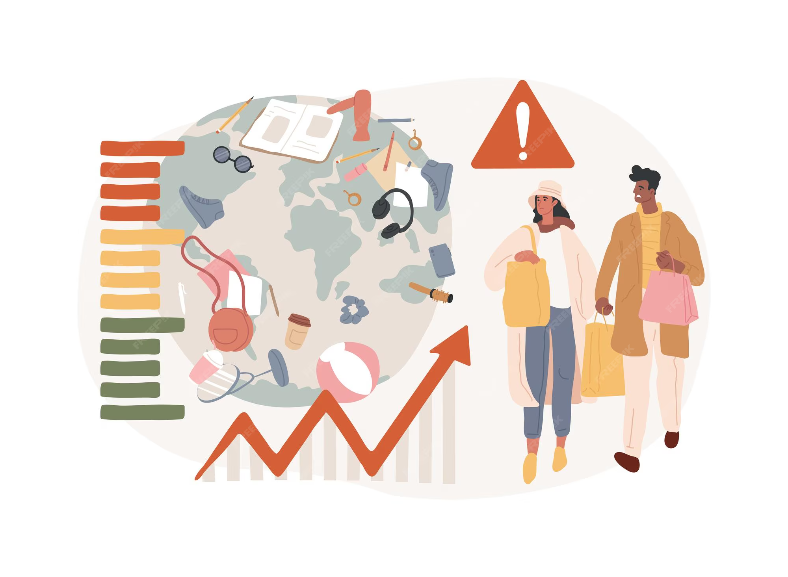

Produção e Consumo
A produção e o consumo são processos interligados que impactam a economia, o meio ambiente e a sociedade, e a adoção de práticas sustentáveis é essencial para garantir um futuro equilibrado Definições e Processos.
Produção
é o processo de transformar recursos (como matéria-prima, mão de obra e máquinas) na criação de bens ou serviços para satisfazer necessidades humanas ou objetivos económicos. Esse processo envolve uma série de etapas coordenadas, desde o planeamento e a obtenção de recursos até a distribuição, e é fundamental para o funcionamento da economia, seja através da fabricação de produtos tangíveis ou da prestação de serviços.
Consumo
O consumo é a satisfação das necessidades humanas por meio da aquisição de bens e serviços. O consumo responsável ocorre quando os consumidores fazem escolhas conscientes, adquirindo apenas o que é necessário e evitando produtos supérfluos.
